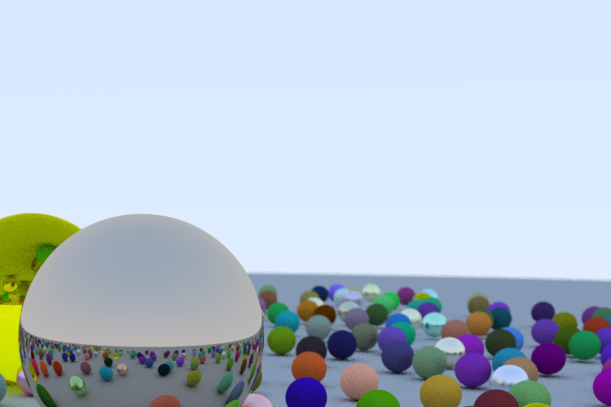

Path to Pixar
Table of Contents
1 First Step – Ray Tracing
1.1 Scratchapixel Articles
1.2 Ray Tracing in One Weekend
Book

Figure 1: Cool! This is my first graphic demo.
2 CMU 15462 (fall 2019)
2.1 Quiz
- TODO
- DONE Numerical Linear Algebra
- DONE Basic Vector Class
- TODO
- TODO
- TODO
- TODO
- DONE Fractal Pterodactyl
- TODO
- TODO
- TODO
- DONE Color Conversion
3 Offline Rendering
3.1 Physically Based Rendering
3.1.1 TODO CONTENT
- Introduction
- pbrt: System Overview
[0/1][ ]Scene Representation
- Parallelization of pbrt
[0/3][ ]Data Races and Coordination[ ]Conventions in pbrt[ ]Thread Safety Expectations in pbrt
- A Brief History of Physically Based Rendering
[0/2][ ]Research[ ]Production
- Further Reading
- Exercises
- pbrt: System Overview
- Geometry and Transformations